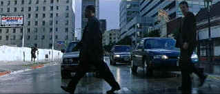

|
Training
Day (SE)/ B+, A (F) |
| Warner/2001/122/ANA
2.35 |
Training Day delivers the goods with explosively magnetic
intensity. From the opening moments, it's cool
cinematic style and tough characterizations capture the rhythms of the
streets and the world these characters inhabit.
Jake Hoyt is the young white bread cop who wants to join an
elite unit. He's hungry for success. It may not be all he thinks
it's cracked up to be. Alonzo Harris is the street savvy black cop who
runs the unit. Jake must prove to Alonzo that he has what it takes.
Training Day covers one day that will determine Jake's future as
Alonzo takes him through the rigors of his own routine.
|
 |
| Walking
Alonzo's walk. ©Warner |
Training Day doesn't break any fresh cop corruption ground
and some of the plotting may stretch plausibility to the breaking
point, but it is primarily driven by the dynamic central performance of
Denzel Washington as the slickly corrupt cop Alonzo Harris. The
relationship between Alonzo and Jake Hoyt, played with innocent force by
Ethan Hawke, is at the heart of the film. The seduction of corruption is
a powerfully tempting drug for law enforcement officials in the path of
temptation. Scott Glenn is always a pleasure on film, but he is mostly
wasted in the role of big fish drug dealer Roger and the
relationship between Alonzo and Roger is all but unfathomable.
What I didn't get is how these guys are the least bit
undercover? They are out front and cops from the world go. But it's only
another plot stutter step that passed me by faster than a speeding
bullet. Director Antoine Fuqua has a good feel for the material and
despite elastic plotting, Fuqua works well with his main
actors giving them the freedom to exercise their talent. Stylistically,
Training Day is a fine looking flick. Fuqua maintains excellent
pacing. Training Day never bogs down is a slog of boredom.
The best advice is to focus on the dynamic performances by leads
Washington and Hawke.
A exemplary example of a beautifully cinematic
transfer, Training Day falls short only on my particular disc
(hopefully) with
numerous hang-ups and blocking problems on the second layer. It's
reference material if this is only isolated on this single disc, a
disaster if it is on the entire pressing. Overall sharpness is
outstanding. Excellent black level is maintained consistently through
various lighting. Contrast range offers good punch and revealing shadow
detail. The Dolby Digital 5:1 is active and engaging.
Antoine Fuqua's commentary is clear and concise.
Fuqua's life experience seems comfortable with the material. He calls
the undercover cops gang-bangers. Washington, according to Fuqua, wanted
him to direct the film because I know the world and because there's a
certain reality in that world and language that people would avoid.
"You've got to be in the belly of the beast."
Reviewed on a Sharp 9000VX DLP Projector
|
|
|
|

Selections from the Feature
Archive include articles on
Akira Kurosawa, Blonde
Bimbos,
Frank
Darabont, Steven
Culp, John
Herzfeld or Vietnam:
The Hollywood Pariah, and many more....
Director Walks the
Wire
Balanced by an armor of movie lore and filmmaking daring, director
John Herzfeld is comfortable walking the high wire. Check out this
interview by Stu Kobak.

The
Movie Poster Archive includes extensive poster images from the films of
stars like Susan Hayward, Kirk Douglas, Katharine Hepburn and many more. Our
featured star is James
Mason


Searchers,
The/ A,B

John Wayne invests Ethan Edwards with enormous dignity and
determination. A classic western from director John Ford. Mesmerizingly
beautiful.
|